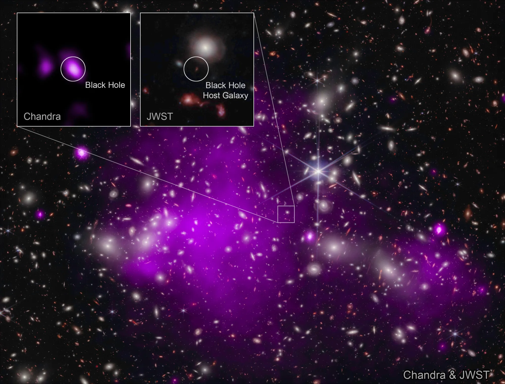

NASA Telescopes Discover Record-Breaking Black Hole
Published on: November 06, 2023
Astronomers have discovered the most distant black hole yet seen in X-rays, using NASA telescopes. The black hole is at an early stage of growth that had never been witnessed before, where its mass is similar to that of its host galaxy.
By combining data from NASA’s Chandra X-ray Observatory and NASA’s James Webb Space Telescope, a team of researchers was able to find the telltale signature of a growing black hole just 470 million years after the big bang.tronomers found the most distant black hole ever detected in X-rays (in a galaxy dubbed UHZ1) using the Chandra and Webb space telescopes. X-ray emission is a telltale signature of a growing supermassive black hole. This result may explain how some of the first supermassive black holes in the universe formed. These images show the galaxy cluster Abell 2744 that UHZ1 is located behind, in X-rays from Chandra and infrared data from Webb, as well as close-ups of the black hole host galaxy UHZ1.
